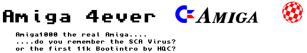

Amiga 4ever
Truetype Font Family, based on the Amiga OS 3.x rom font
Copyright (c) 2001 by ck! [Freaky Fonts].
All rights reserved.
The personal, non-commercial use of my font is free.
But Donations are accepted and highly appreciated!
The use of my fonts for commercial and profit purposes is prohibited,
unless a small donation is send to me.
Contact: ck@freakyfonts.de
These font files may not be modified or renamed.
This readme file must be included with each font, unchanged.
Redistribute? Sure, but contact me first.
If you like the font, please mail:
ck@freakyfonts.de
Visit .:Freaky Fonts:. for updates and new
fonts (PC & MAC) :
www.freakyfonts.de
www.geocities.com/Area51/Shadowlands/7677/
Thanks again to {ths} for the Mac conversion.
1@ths.nu or visit: www.ths.nu
Note:
Photoshop
use: Size 8 (& multiplier) - antialising turned off
Paintshop use: Size 6 (& multiplier) - antialising turned off
Amiga 4ever = like the original, 8x8
- sideborder vary
Amiga 4ever pro = modified, mainly 2 pixel sideborder
Amiga 4ever pro2 = ... mainly 1 pixel sideborder
This font includes some dingbats, cut & paste: ƒ„…†‡ˆ
All trademarks are property of their respective owners.